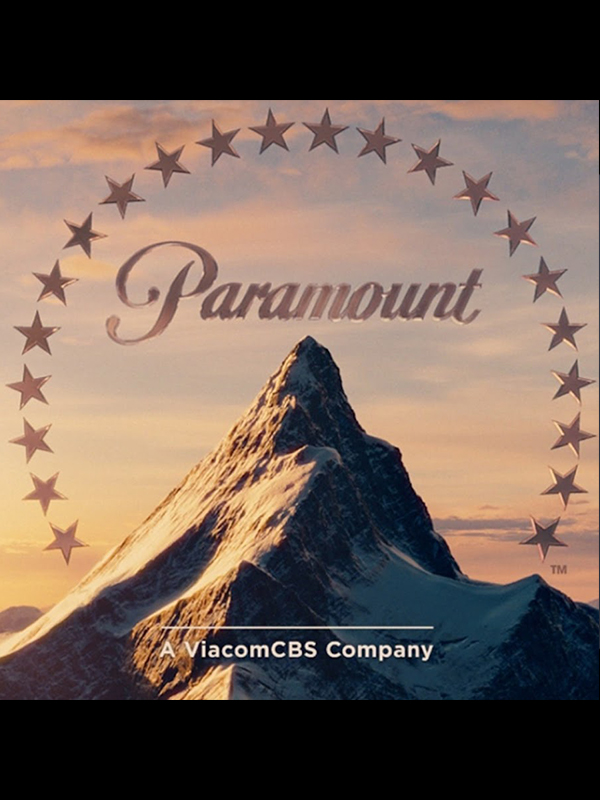

"Top Gun: Maverick" is a highly anticipated action drama film and a sequel to the 1986 classic "Top Gun." Directed by Joseph Kosinski, the movie stars Tom Cruise reprising his role as United States Navy Captain Pete "Maverick" Mitchell. Set to release in 2022, the film continues the story of Maverick as he navigates the modern-day challenges of naval aviation and passes on his legacy to a new generation of fighter pilots.
Directed by -
Joseph Kosinski
Joseph Kosinski (born May 3, 1974)[1] is an American film director best known for his computer graphics and computer-generated imagery (CGI) work, and for his work in action films. He made his big-screen directorial debut with the 2010 science fiction film Tron: Legacy, the sequel to the 1982 film Tron. He also directed the 2013 science fiction film Oblivion, the 2017 biographical drama film Only the Brave, and the 2022 action drama film Top Gun: Maverick, the sequel to the 1986 film Top Gun. His previous work has primarily been with CGI-related television commercials including the "Starry Night" commercial for Halo 3[2] and the award-winning "Mad World" commercial for Gears of War.
Produced by -
Tom Cruise
Thomas Cruise Mapother IV, known professionally by his stage name Tom Cruise, is an American actor and producer. One of the world's highest-paid actors, he has received various accolades, including an Honorary Palme d'Or and three Golden Globe Awards, in addition to nominations for four Academy Awards.Cruise has largely starred in science fiction and action films, establishing himself as an action star, often performing his own risky stunts. He has played Ethan Hunt in the Mission: Impossible film series since 1996.Cruise is noted as having negotiated some of the most lucrative film deals in Hollywood, and was described in 2005 by Hollywood economist Edward Jay Epstein as "one of the most powerful – and richest – forces in Hollywood." Epstein argues that Cruise is one of the few producers (the others being George Lucas, Steven Spielberg and Jerry Bruckheimer) who are regarded as able to guarantee the success of a billion-dollar film franchise.
Distributed by -
Paramount Pictures
 Paramount Pictures Corporation is an American film and television production and distribution company and the namesake division of Paramount Global (formerly ViacomCBS). It is the fifth-oldest film studio in the world,[1] the second-oldest film studio in the United States (behind Universal Pictures), and the sole member of the "Big Five" film studios located within the city limits of Los Angeles.In 1916, film producer Adolph Zukor put 24 actors and actresses under contract and honored each with a star on the logo.[3] In 1967, the number of stars was reduced to 22 and their hidden meaning was dropped. In 2014, Paramount Pictures became the first major Hollywood studio to distribute all of its films in digital form only.[4] The company's headquarters and studios are located at 5555 Melrose Avenue, Hollywood, California.
2023 Winner Critics Choice Award-Best Cinematography-Claudio Miranda
2023 winner AARP Movies for Grownups Awards- best movie for Grownups Awards
2023 Winner IFCS Award-Best Action Film
2023 Winner Austin Film Critics Association- Special Honorary Award-Glen Powell
2023 Winner MCFCA Award-Best Sound
The plot of Top Gun
"Top Gun: Maverick" picks up decades after the events of the original film. Captain Pete "Maverick" Mitchell, now a seasoned and highly decorated naval aviator, is still working as a test pilot and flying for the Navy. Despite his accomplishments, Maverick remains haunted by the memory of his late best friend and Radar Intercept Officer, Nick "Goose" Bradshaw
Maverick's superiors, including Admiral Bradley "Bear" Metcalf (played by Jon Hamm), recognize his exceptional skills but are concerned about his unwillingness to advance his career. They believe that Maverick's solitary nature and reluctance to move up the ranks may be holding him back.
As the Navy faces new challenges in the era of drone warfare and advanced technology, Maverick is tasked with training a group of young pilots, including Bradley "Rooster" Bradshaw (played by Miles Teller), the son of Maverick's late best friend, Goose. Rooster is determined to follow in his father's footsteps and seeks guidance and mentorship from Maverick.
Throughout the film, Maverick grapples with his past, his legacy, and the responsibilities of training the next generation of fighter pilots. He must confront his inner demons while proving that the human touch and instinctive skill of traditional aviation are still vital in the modern military landscape.
The movie features breathtaking aerial sequences, showcasing the power and agility of fighter jets, which have become a hallmark of the "Top Gun" franchise. The film also explores Maverick's relationships with fellow pilots, including the tough and skilled Lieutenant Commander Joanne "Phoenix" Wigman (played by Jennifer Connelly), adding depth to the story."Top Gun: Maverick" promises to deliver an adrenaline-pumping mix of thrilling action, emotional storytelling, and a nostalgic tribute to the original film
Behind The scenes
"Top Gun: Maverick" is known for its high-octane aerial sequences, which were achieved using real fighter jets and skilled pilots. The filmmakers collaborated closely with the U.S. Navy and utilized state-of-the-art camera equipment to capture the thrilling dogfights in the sky.
Director Joseph Kosinski is known for his emphasis on practical effects, and "Top Gun: Maverick" is expected to feature a combination of practical stunts and visual effects. The team aimed to create realistic and immersive action sequences to enhance the film's authenticity.
Tom Cruise, who portrays Maverick, is renowned for performing many of his own stunts, and "Top Gun: Maverick" is no exception. Cruise underwent intense flight training to handle the fighter jets and participated in some of the daring aerial maneuvers seen in the film.
To add realism to the movie, real U.S. Navy pilots were involved in the production. Some pilots even had cameo roles in the film, showcasing their expertise onscreen.
"Top Gun: Maverick" introduces a new generation of fighter pilots, portrayed by actors like Miles Teller and Jay Ellis. The film explores their training and camaraderie with Maverick, providing a fresh perspective on the world of naval aviation.
While "Top Gun: Maverick" continues the story, it also pays homage to the original "Top Gun" film, capturing the spirit and excitement of the '80s classic while bringing it into a modern setting.
DID YOU KNOW?
Real Fighter Jet Training: The cast, including Tom Cruise and other actors portraying fighter pilots, underwent intense flight training to prepare for their roles. They trained with real U.S. Navy pilots and experienced high G-forces during the aerial sequences.
Real Aircraft Carriers: The film features scenes filmed on real aircraft carriers, with the filmmakers granted unprecedented access to U.S. Navy vessels. This adds to the film's authenticity and realism.
"Top Gun: Maverick" was released more than 35 years after the original "Top Gun" film (1986). This makes it one of the longest gaps between the release of a film and its sequel in Hollywood history.
The film serves as a tribute to the original "Top Gun" director, Tony Scott, who passed away in 2012. The filmmakers sought to honor his legacy and capture the essence of the original film.